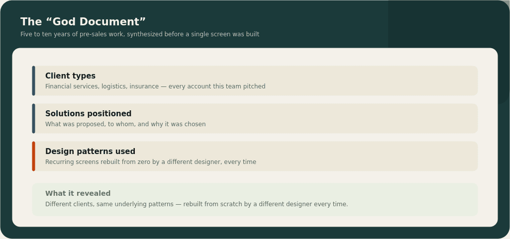
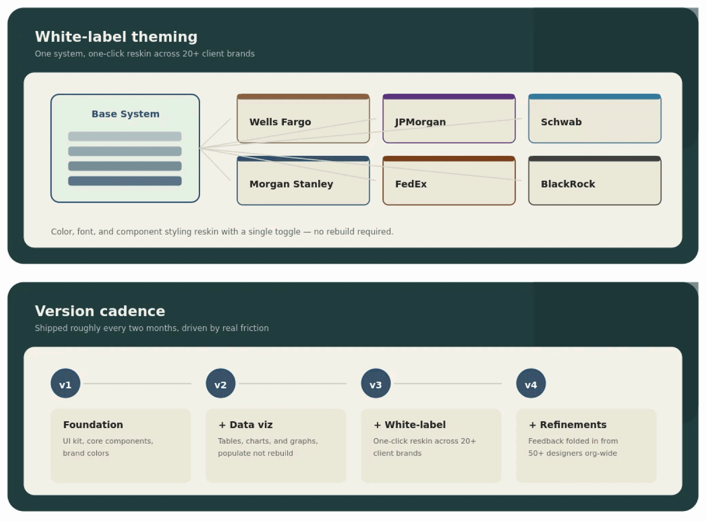

Blink UX (Mphasis)
The Design System Behind $100M+ In Enterprise Deals
Not everyone like's to read to much nowadays (thanks TikTok). See a comic strip?
Comic Strip ↓
The Problem
I joined a pre-sales team at Mphasis whose entire job was winning deals. Anywhere from $1 million to $100 million; by building demos that show a client what their product could look like. Good work, done constantly, by designers all over the org. And every bit of it disappeared the moment it shipped.
A designer would get pulled in for a specific pitch, build ten screens, package them into a prototype, hand it to developers, and the client would see a polished demo. Then that work sat in someone's Outlook or a Teams chat, invisible to the next designer who'd build the same kind of thing from scratch two weeks later for a different client. No shared language, no reusable components, no institutional memory. Just repeated effort, dressed up as bespoke work.
My Role
Solo Designer
Sole designer responsible for building what became the fix; end to end, from research through a system used company-wide.
Research
Understanding the Domain
Before I opened Figma, I spent two to three months as a researcher, not a designer. I talked to the designers doing this work, the developers building the prototypes, and the salespeople pitching them. Asking what they were actually trying to accomplish, what they built, and for whom.
The God Document
Every use case, every client type, every solution positioned, and every design pattern used across five to ten years of this team's work. Validated back with the people I'd interviewed, not just written up and filed.
Ideas (everything, good or bad), Product Goals (merged into real-world actions), Users (scenarios)
Every use case, every client type, every solution positioned, and every design pattern used across five to ten years of this team's work. Validated back with the people I'd interviewed, not just written up and filed.
The Overlap
The finding underneath all of it: these teams' work overlapped constantly. Different clients, same underlying patterns, rebuilt from zero every time.

Setting the Direction
Brand
I spent a week with Mphasis's marketing team learning the actual guidelines; so the system wouldn't just be internally consistent, it would be on-brand the first time, not after a redesign.
Desk Research
Over two to three weeks I studied fifteen existing design systems: Lightning, Manhattan, Material, Apple's Human Interface Guidelines, Uber's, Ant Design, IBM Carbon, and others looking for where their targets overlapped with what Mphasis actually needed, and where nothing out there fit our case at all.
Ideas (everything, good or bad), Product Goals (merged into real-world actions), Users (scenarios)
Over two to three weeks I studied fifteen existing design systems: Lightning, Manhattan, Material, Apple's Human Interface Guidelines, Uber's, Ant Design, IBM Carbon, and others looking for where their targets overlapped with what Mphasis actually needed, and where nothing out there fit our case at all.
The Inspiration
I narrowed that to four systems as primary reference points: Material, IBM Carbon, Lightning, and Uber's; because each had genuinely deep UI kits and component coverage. I built four concept screens themed in Mphasis colors, borrowing structurally from each, and brought them to marketing for a direct reaction: what aligns, what doesn't, what's already how the company shows up elsewhere.
Their answer pointed clearly at one structural direction: Carbon's approach to depth and documentation as the backbone.
The decision
I spent three to four months building a system before it touched a single live deal, on a team that measured itself in weekly deal velocity.
That's the tradeoff worth naming. Every week I was building the system instead of shipping deal-specific screens was a week the team's usual output looked slower by the old metric. I made that bet anyway, because the entire premise of the project was that one-off screens were the problem, building more of them faster wasn't a fix, it was more of the disease.
The system, I called it Voyage. Ended up covering roughly 84,000 individual elements, atoms up through molecules, built against 20 marketing-approved brand colors and their accent variations, with full documentation: spacing rules, font hierarchy down to tertiary choices, usage guidance for every component.
What was shipped
Getting it adopted, not just built
Shipping the system wasn't the finish line. I put it back in front of the same designers I'd interviewed at the start and spent one to two months refining it against real feedback: what felt missing, what felt redundant.
Then I kept iterating on a cadence: new versions roughly every two months, driven by what teams actually hit friction on.
White Labeling
About three to four months into adoption, a pattern emerged: sales and business leads increasingly wanted demos visually themed to the specific client being pitched, not a generic Mphasis-branded screen.
So I built variable theme sets into the system: a one-click switch that reskins color, font, and component styling to match any of 20+ major client brands. What had been a rebuild became a toggle.
Ideas (everything, good or bad), Product Goals (merged into real-world actions), Users (scenarios)
Constant Updates
The clearest example: two months in, teams doing financial-services pitches kept needing better data visualization: tables, charts, pie graphs, etc.
I sat with designers to understand how they were actually building these by hand in Figma, then built proper visualization components so the work became "enter your values"

The result
Clients this touched include Wells Fargo, JPMorgan Chase, Morgan Stanley, Charles Schwab, BlackRock, Corebridge, FedEx, and 20+ other major financial institutions. The system is now being extended with AI-native capability; under NDA at the moment, so that part of the story isn't public yet.